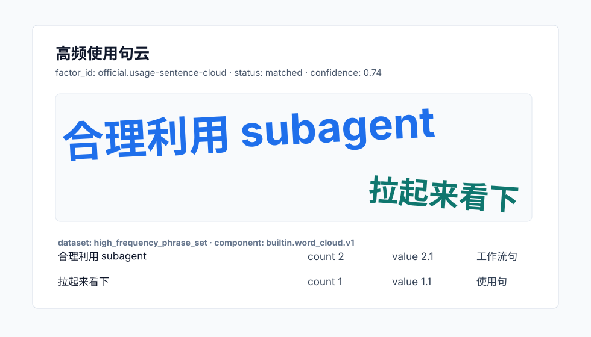

高频使用句云

| display_sentence | count | value | category | sample_session_ids |
|---|---|---|---|---|
| 合理利用 subagent | 2 | 2.1 | 工作流句 | official-factor-session-usage-sentence-cloud |
| 拉起来看下 | 1 | 1.1 | 使用句 | official-factor-session-usage-sentence-cloud |

| display_sentence | count | value | category | sample_session_ids |
|---|---|---|---|---|
| 合理利用 subagent | 2 | 2.1 | 工作流句 | official-factor-session-usage-sentence-cloud |
| 拉起来看下 | 1 | 1.1 | 使用句 | official-factor-session-usage-sentence-cloud |